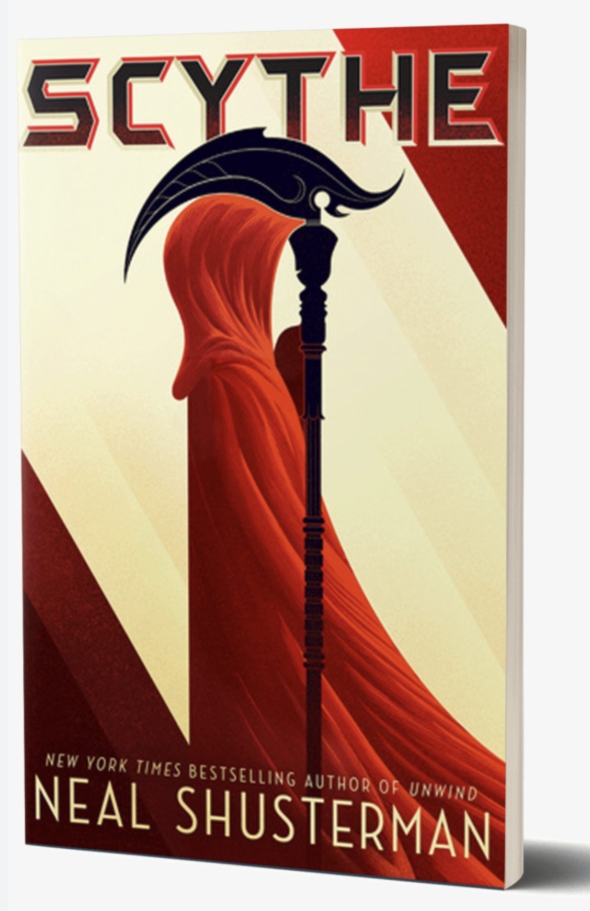

The story of two teenagers who must learn the art of killing.
A world with no disease, hunger, war, or misery: humanity has conquered death. In order to control population Scythes are tasked with ending human lifes to control the growing population. Citra and Rowan are chossen to become Scythes in training. Will they be able to preform their new duties, or will this new positon break them completly?
 About the author